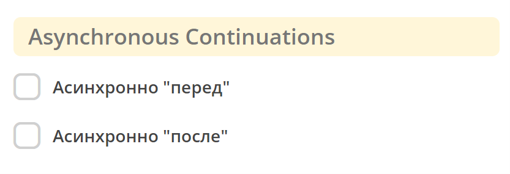

Скриптовая задача
Содержание
Атрибуты и форма
Используется язык JavaScript.
{kind=link}
Указать Имя |
|
Указать скрипт |
|
Настройки асинхронности, см. подробнее о асинхронных задачах |
 |
{kind=link}
{kind=link}
{kind=link}
Доступные переменные
Переменные процесса
Во время выполнения скриптов доступны все переменные процесса, видимые в текущей области.
//someVar - переменная процесса
print("someVar: " + someVar);
Execution
execution - переменная, которая всегда доступна, если скрипт выполняется в области выполнения (например, в Script Task). (DelegateExecution)
// получение переменной процесса
var sum = execution.getVariable('x');
// установление переменной процесса
execution.setVariable('y', x + 15);
Document
document - является скриптовым представлением документа AttValueScriptCtx , по которому идет БП.
//получение атрибута документа
var created = document.load("_created");
//установление атрибуту документа указанного значения
document.att("firArchiveBoxNumber", 123);
//сохранение
document.save();
//сброс состояния документа, если ранее были внесены изменения через att()
document.att("firArchiveBoxNumber", 123);
document.reset();
Records
Records - это сервис, который предоставляет доступ к функциям работы с рекордами RecordsScriptService.
//Получение скриптового представление указанного рекорда
var doc = Records.get("emodel/doc@111");
//Query рекордов
var queryCommentsResult = Records.query({
sourceId: "emodel/comment",
language: "predicate",
query: {
a: "record",
t: "eq",
v: "emodel/doc@123"
}
}, {
text: "text",
created: "_created"
});
var firstComment = queryCommentsResult.records[0];
var text = firstComment.text;
var created = firstComment.created;
print("comment: " + text + " created on " + created);
Ecos Config
Config - предоставляет доступ к Конфигурации Ecos по ключу в формате <область>$<идентификатор>.
get(key: String): DataValue- получение значения по ключу
getOrDefault(key: String, defaultValue: Any): DataValue- получение значения по ключу, если значение не найдено, то возвращается значение по умолчанию
getNotNull(key: String): DataValue- получение значения по ключу, если значение null, то выбрасывается исключение
//получение значения конфигурации по ключу и приведение к типу String
var serviceDeskEmailFrom = Config.get("app/service-desk$send-sd-email-from").asText()
DataValue
DataValue - объект, позволяющий сконвертировать данные в стркутуру BpmnDataValue для удобной работы с json представлением, это позволяет безопасно обращаться к полям, получать значения по умолчанию, приводить к нужному типу, сохранять данные в execution и многое другое, подробнее см. методы класса.
DataValue.of(content: Any?)- создает объект DataValue из любого объекта, если объект не может быть сконвертирован в DataValue, то возвращается пустой объект DataValue.
DataValue.createObj()- создает пустой объект DataValue.
DataValue.createArr()- создает пустой массив DataValue.
DataValue.createStr(value: Any?)- создает строковое представление переданного значения.
Пример использования:
var event = DataValue.of(someExampleEventStructure);
print("---HELLO FROM SCRIPT---");
print("event id from base: " + event.get("_meta").get("id"));
print("event id from $: " + event.get("$._meta.id"));
print("event id from JsonPointer: " + event.get("/_meta/id"));
print("event time as instant: " + event.get("/_meta/time").takeAsInstant());
print("event field names list: " + event.fieldNamesList());
print("call undefined prop is safe: " + event.get("/_meta/a/b/c/"));
print("event id is boolean " + event.get("_meta").get("id").isBoolean());
print("-------END--------------");
DataValue может быть сохранен в execution процесса с последующим извлечением и использованием.
Сохраняем в execution:
var arr = ["a", "b"];
var obj = {
a: "b"
}
var dArr = DataValue.of(arr);
var dObj = DataValue.of(obj);
execution.setVariable("dArr", dArr);
execution.setVariable("dObj", dObj);
Обращаемся к сохраненным в execution переменным в другом скрипте
print("----------");
print("dArr: " + dArr);
print("dArr 0: " + dArr.get("0"));
print("dObj: " + dObj);
print("dObj a: " + dObj.get("a"));
print("----------");
Результат:
----------
dArr: {"0":"a","1":"b"}
dArr 0: "a"
dObj: {"a":"b"}
dObj a: "b"
----------
WebUrl
webUrl - переменная возвращает настроенный веб url сервера
Tasks
tasks - сервис для манипуляций над задачами.
tasks.completeActiveTasks(execution: DelegateExecution)- завершает все активные задачи по инстансу процесса из [DelegateExecution.getProcessInstanceId]. Задачи завершаются с результатом defaultDone: Выполнено.
Logger
log - логгер, пишет в микросервис ecos-process, дополнительно выводится информация о execution. Для настройки уровня логирования используется класс ru.citeck.ecos.process.domain.bpmn.engine.camunda.services.beans.ScriptLogger.
Поддерживаемые методы:
log.info(message: String)
log.warn(message: String)
log.error(message: String)
log.debug(message: String)
log.trace(message: String)
Примечание
Читай подробнее о scripting в Camunda